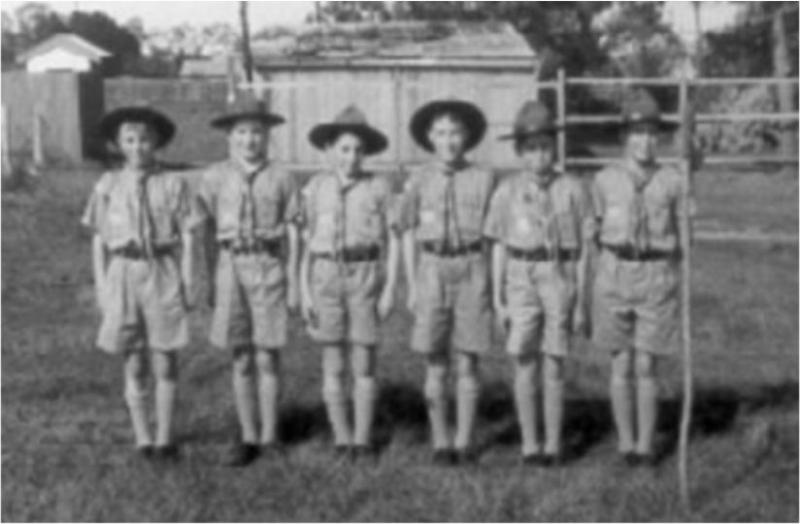

31 Outhwaite Rd Heidelberg Heights
Main menu
Find us here...
You are here
About Us
In the beginning
Heidelberg Scouts was found in 1954 and boast a long and rich history of dedicated scout leaders and enthusiastic boy and now of course, girl scouts. At Heidelberg you will find a friendly group of leaders, parents, scouts, cubs and joeys that will make you children feel right at home.
Circa 1954
Foundation Leaders include:
- Shirley Anderson (Bagheera) (Cubs)
- Ken Sharp (Baloo) (Cubs)
- ? McBain (Group Scout Master)
Foundation and early Wolf Cubs include:
- Adrian Walsh
- Allan Williams
- Robert Mott (dec)
Foundation and early Boy Scouts include:
- Brian Williams
Scarf is half red and half yellow with Heidelberg District badge on the peak. Wolf Cubs meet initially in a private home in Waterdale Road and then move to the Council-owned hall on Burgundy Street. Group is given a block of land (by Heidelberg Council or Housing Commission) on Waterdale Road )?) but is not built on.
Circa 1956
Bill Ager arrives in local area and decides to restart 1st Baynesville.
Bill identifies Adrian Walsh (now a patrol Leader with 1st Bellfield) as a former member of 1stBaynesville and invites him to return to the Group as an experienced Scout and to be the PL of the first of the new Patrols to be formed.
Nobody is sure where the original name “Baynesville” comes from. Noted that an early GSM was “Mcbain” and since there is a chance it was named after him or family decided to use the new name of “1st West Heidelberg”. In 2013 the group was renamed Heidelberg Scouts to reflect the large geographic region the group catered to.
Scarf chosen of royal blue with gold and silver edging (still used today).
First Troop meeting held at Bill Ager’s home (Swanston Street) on Saturday 13 June 1959. The Patrol chooses the Kookaburra as the Troop emblem (still on the Group scarf and the name of the eventual hall – “Kookaburra Lodge”). First patrol is the Emu patrol.
Foundation and early Leaders include:member.webs.com.au
- Bill Ager (Wings) (Group Scout Master)
- Bill Kennon (Charka) (Scouts)
- Brian Williams (Numa) (Scouts)
- Ron Nyman (Scouts) (Dec)
Foundation Patrol was:
- Adrian Walsh (Patrol Leader)
- Allan White
- Brian Kennon
- Ian Ross
- Robin Wassell
- Tony Ager
- Charles Rich
(Lots more details of the doings of the Troop over the next couple of years are in the Log Book maintained from the first meeting until September 1961. The original of this has been lodged with the Victorian Scout Heritage Centre; photocopies are available.)